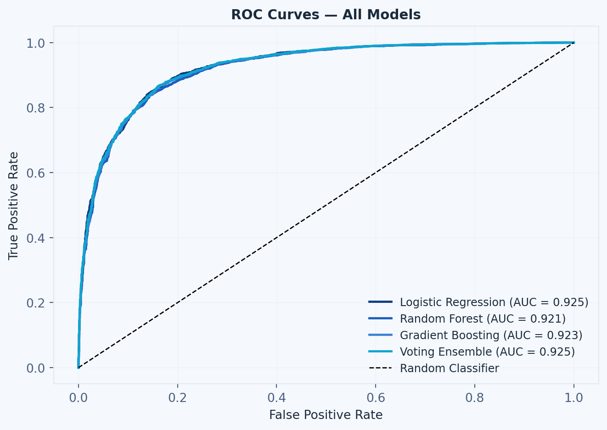
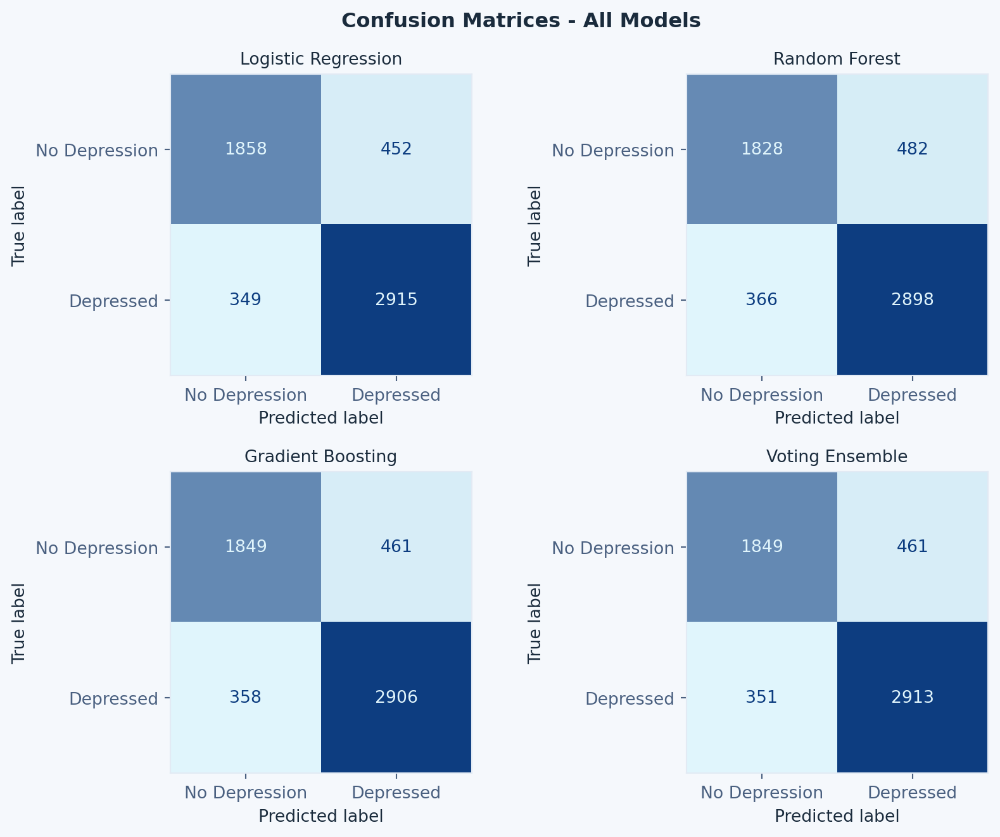
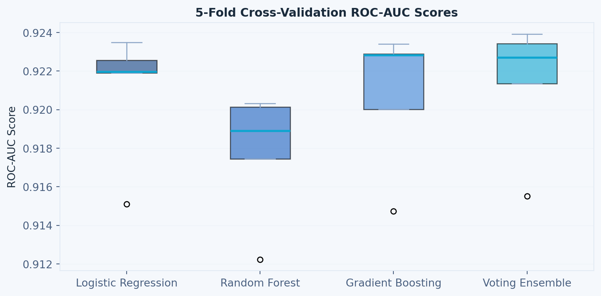
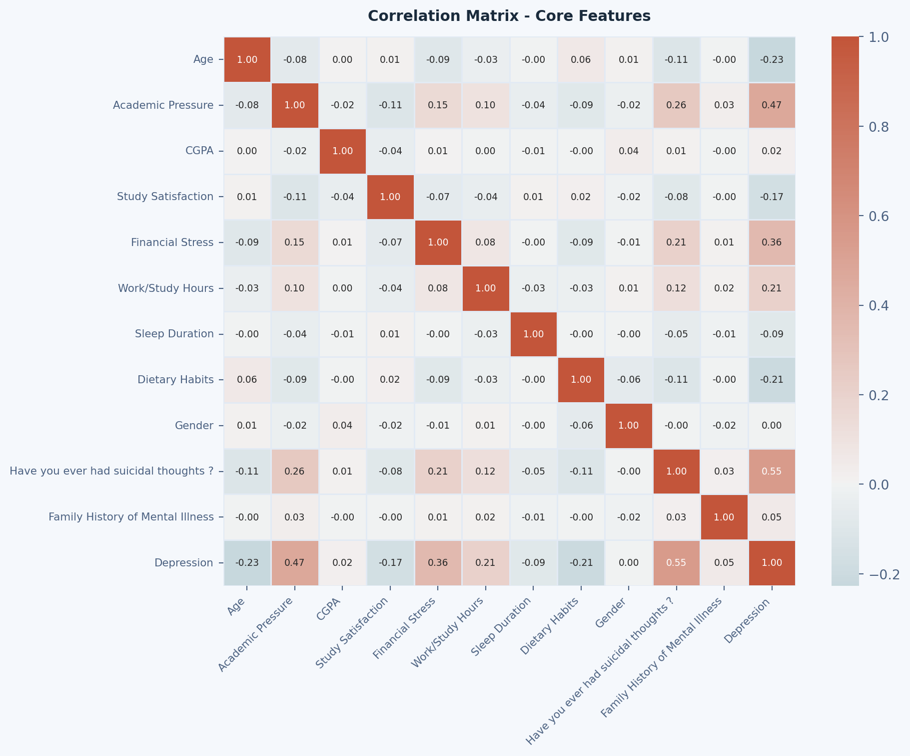
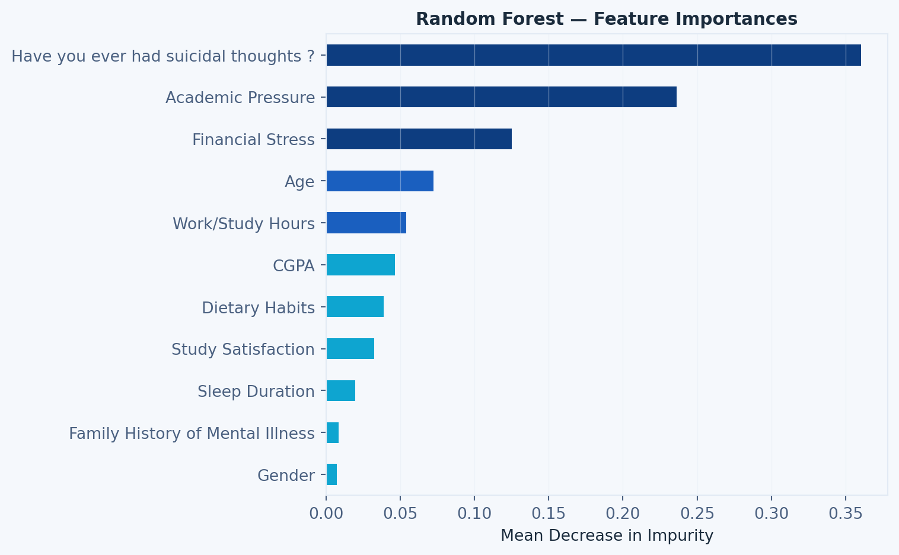
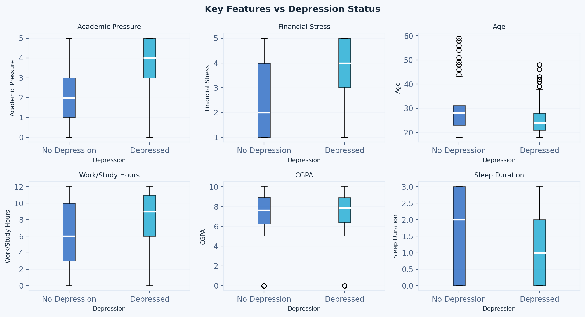
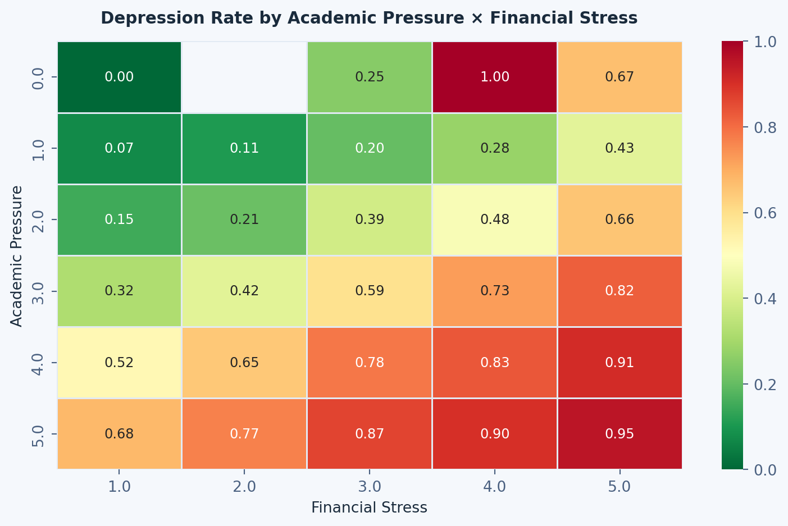
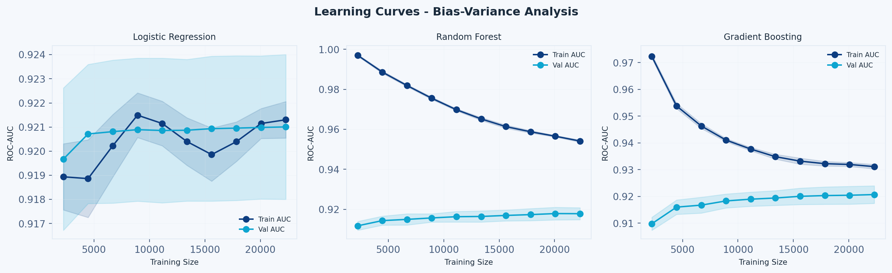
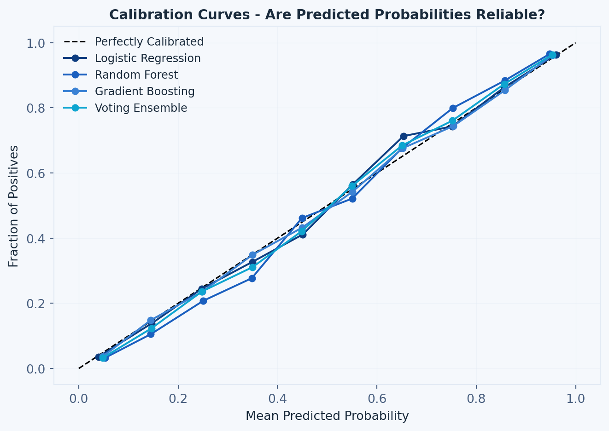
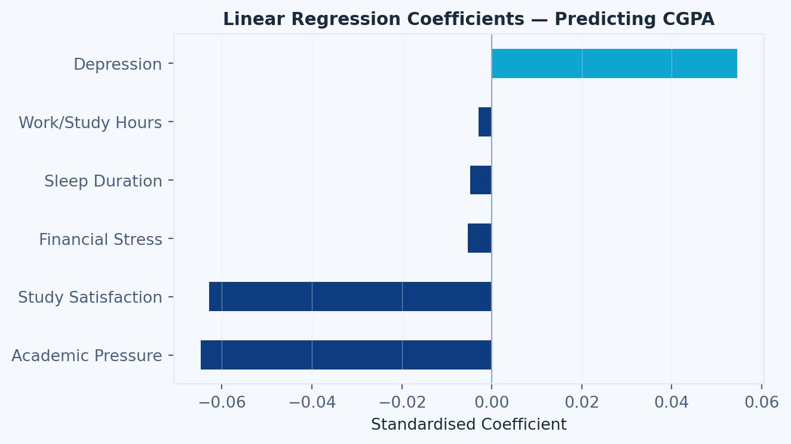

%%{init: {'theme': 'dark', 'themeVariables': {'primaryColor': '#4E9E94', 'primaryTextColor': '#E8E8E4', 'primaryBorderColor': '#7AAF9F', 'lineColor': '#7AAF9F', 'background': '#353A38'}}}%%
flowchart LR
A[Raw Data] --> B[Preprocessing]
B --> C[Train/Test Split]
C --> D[Model Training]
D --> E[Evaluation]
E --> F[Results]
Predicting Student Depression Using Machine Learning
Machine Learning
Python
Classification
Mental Health
Comparing ensemble methods and interpretable linear models across a dataset of 27,901 university students to predict depression and identify key risk factors.
About
This study applies supervised machine learning to a dataset of 27,901 university students to predict depression and identify key risk factors. Models evaluated include Logistic Regression (LR), Random Forest (RF), Gradient Boosting (GB), and a Voting Ensemble (VE), alongside SHAP-based interpretability and calibration analysis.
All models achieved strong performance (ROC-AUC ≈ 0.92), with LR matching or slightly outperforming more complex methods. Key predictors include suicidal ideation, academic pressure, and financial stress.
Module: BAA1027 Data Analytics: Machine Learning & Advanced Python
Lecturer: Dr. Michael Farayola
Word Count: 2,744
The classification pipeline follows these steps:
1. Imports
Show imports
import os
import warnings
import pandas as pd
import numpy as np
import matplotlib.pyplot as plt
import matplotlib as mpl
import seaborn as sns
from scipy import stats
from sklearn.model_selection import (
train_test_split, cross_val_score,
StratifiedKFold, GridSearchCV, learning_curve
)
from sklearn.preprocessing import LabelEncoder, StandardScaler
from sklearn.linear_model import LogisticRegression, LinearRegression
from sklearn.ensemble import (
RandomForestClassifier,
GradientBoostingClassifier,
VotingClassifier
)
from sklearn.metrics import (
classification_report, confusion_matrix,
roc_auc_score, roc_curve, ConfusionMatrixDisplay,
precision_recall_curve, average_precision_score
)
from sklearn.decomposition import PCA
from sklearn.pipeline import Pipeline
from sklearn.calibration import calibration_curve
warnings.filterwarnings('ignore')
os.makedirs("figures", exist_ok=True)
# ── Colour palette ────────────────────────────────────────────────
PALETTE = {
'primary_dark': '#0D3D80',
'primary': '#1A5FBF',
'primary_light': '#3B82D4',
'accent': '#0EA5D0',
'accent_subtle': '#E0F5FC',
'surface': '#F5F8FC',
'border': '#E2EAF4',
'muted': '#8FA8C8',
'text': '#1A2B3C',
'text_secondary': '#4A6080',
}
MODEL_COLORS = [
PALETTE['primary_dark'],
PALETTE['primary'],
PALETTE['primary_light'],
PALETTE['accent'],
]
mpl.rcParams.update({
'font.family': 'sans-serif',
'font.size': 10,
'axes.titlesize': 11,
'axes.labelsize': 10,
'legend.fontsize': 9,
'figure.titlesize': 12,
'axes.facecolor': PALETTE['surface'],
'figure.facecolor': PALETTE['surface'],
'axes.edgecolor': PALETTE['border'],
'grid.color': PALETTE['border'],
'grid.linewidth': 0.5,
'text.color': PALETTE['text'],
'axes.labelcolor': PALETTE['text'],
'xtick.color': PALETTE['text_secondary'],
'ytick.color': PALETTE['text_secondary'],
})
print("Libraries loaded ✓")Libraries loaded ✓2. Dataset and Data Preparation
Show data preparation code
# ── Load dataset ──────────────────────────────────────────────────
df = pd.read_csv("../../projects_files/student-depression-dataset.csv")
print("Shape:", df.shape)
print("\nColumn Types:\n", df.dtypes)
print("\nMissing Values:\n", df.isnull().sum())
print("\nTarget Distribution:\n",
df['Depression'].value_counts(normalize=True).round(3))
df.head()Shape: (27901, 18)
Column Types:
id int64
Gender object
Age float64
City object
Profession object
Academic Pressure float64
Work Pressure float64
CGPA float64
Study Satisfaction float64
Job Satisfaction float64
Sleep Duration object
Dietary Habits object
Degree object
Have you ever had suicidal thoughts ? object
Work/Study Hours float64
Financial Stress float64
Family History of Mental Illness object
Depression int64
dtype: object
Missing Values:
id 0
Gender 0
Age 0
City 0
Profession 0
Academic Pressure 0
Work Pressure 0
CGPA 0
Study Satisfaction 0
Job Satisfaction 0
Sleep Duration 0
Dietary Habits 0
Degree 0
Have you ever had suicidal thoughts ? 0
Work/Study Hours 0
Financial Stress 3
Family History of Mental Illness 0
Depression 0
dtype: int64
Target Distribution:
Depression
1 0.585
0 0.415
Name: proportion, dtype: float64| id | Gender | Age | City | Profession | Academic Pressure | Work Pressure | CGPA | Study Satisfaction | Job Satisfaction | Sleep Duration | Dietary Habits | Degree | Have you ever had suicidal thoughts ? | Work/Study Hours | Financial Stress | Family History of Mental Illness | Depression | |
|---|---|---|---|---|---|---|---|---|---|---|---|---|---|---|---|---|---|---|
| 0 | 2 | Male | 33.0 | Visakhapatnam | Student | 5.0 | 0.0 | 8.97 | 2.0 | 0.0 | 5-6 hours | Healthy | B.Pharm | Yes | 3.0 | 1.0 | No | 1 |
| 1 | 8 | Female | 24.0 | Bangalore | Student | 2.0 | 0.0 | 5.90 | 5.0 | 0.0 | 5-6 hours | Moderate | BSc | No | 3.0 | 2.0 | Yes | 0 |
| 2 | 26 | Male | 31.0 | Srinagar | Student | 3.0 | 0.0 | 7.03 | 5.0 | 0.0 | Less than 5 hours | Healthy | BA | No | 9.0 | 1.0 | Yes | 0 |
| 3 | 30 | Female | 28.0 | Varanasi | Student | 3.0 | 0.0 | 5.59 | 2.0 | 0.0 | 7-8 hours | Moderate | BCA | Yes | 4.0 | 5.0 | Yes | 1 |
| 4 | 32 | Female | 25.0 | Jaipur | Student | 4.0 | 0.0 | 8.13 | 3.0 | 0.0 | 5-6 hours | Moderate | M.Tech | Yes | 1.0 | 1.0 | No | 0 |
Show encoding and cleaning code
df_clean = df.copy()
df_clean.drop(columns=['id'], inplace=True, errors='ignore')
# Binary encoding
binary_cols = [
'Gender',
'Have you ever had suicidal thoughts ?',
'Family History of Mental Illness'
]
le = LabelEncoder()
for col in binary_cols:
df_clean[col] = le.fit_transform(df_clean[col].astype(str))
# Ordinal encoding
sleep_order = {'Less than 5 hours': 0, '5-6 hours': 1,
'7-8 hours': 2, 'More than 8 hours': 3}
diet_order = {'Unhealthy': 0, 'Moderate': 1, 'Healthy': 2}
df_clean['Sleep Duration'] = df_clean['Sleep Duration'].map(sleep_order)
df_clean['Dietary Habits'] = df_clean['Dietary Habits'].map(diet_order)
# One-hot encode high-cardinality nominals
df_clean = pd.get_dummies(
df_clean,
columns=['City', 'Profession', 'Degree'],
drop_first=True
)
df_clean.dropna(inplace=True)
print("Cleaned shape:", df_clean.shape)
print("Remaining nulls:", df_clean.isnull().sum().sum())Cleaned shape: (27868, 105)
Remaining nulls: 0Show train-test split code
core_features = [
'Age', 'Academic Pressure', 'CGPA',
'Study Satisfaction', 'Financial Stress',
'Work/Study Hours', 'Sleep Duration',
'Dietary Habits', 'Gender',
'Have you ever had suicidal thoughts ?',
'Family History of Mental Illness'
]
X = df_clean[core_features]
y = df_clean['Depression']
X_raw_train, X_raw_test, y_raw_train, y_raw_test = train_test_split(
X, y, test_size=0.2, random_state=42, stratify=y
)
print("Train size:", X_raw_train.shape)
print("Test size: ", X_raw_test.shape)Train size: (22294, 11)
Test size: (5574, 11)3. Model Training
Logistic Regression
The logistic regression model predicts the probability of depression as:
\[P(y=1) = \frac{1}{1 + e^{-(\beta_0 + \beta_1 x_1 + \cdots + \beta_n x_n)}}\]
Show Logistic Regression code
lr_pipe = Pipeline([
('scaler', StandardScaler()),
('lr', LogisticRegression(max_iter=1000, random_state=42))
])
lr_pipe.fit(X_raw_train, y_raw_train)
y_pred_lr = lr_pipe.predict(X_raw_test)
lr_probs = lr_pipe.predict_proba(X_raw_test)[:, 1]
print("=== Logistic Regression ===")
print(classification_report(y_raw_test, y_pred_lr))
print(f"ROC-AUC: {roc_auc_score(y_raw_test, lr_probs):.4f}")=== Logistic Regression ===
precision recall f1-score support
0 0.84 0.80 0.82 2310
1 0.87 0.89 0.88 3264
accuracy 0.86 5574
macro avg 0.85 0.85 0.85 5574
weighted avg 0.86 0.86 0.86 5574
ROC-AUC: 0.9247Random Forest
Show Random Forest code
rf_plain = RandomForestClassifier(
n_estimators=200, max_depth=10,
random_state=42, n_jobs=-1
)
rf_plain.fit(X_raw_train, y_raw_train)
y_pred_rf = rf_plain.predict(X_raw_test)
rf_probs = rf_plain.predict_proba(X_raw_test)[:, 1]
print("=== Random Forest ===")
print(classification_report(y_raw_test, y_pred_rf))
print(f"ROC-AUC: {roc_auc_score(y_raw_test, rf_probs):.4f}")=== Random Forest ===
precision recall f1-score support
0 0.83 0.79 0.81 2310
1 0.86 0.89 0.87 3264
accuracy 0.85 5574
macro avg 0.85 0.84 0.84 5574
weighted avg 0.85 0.85 0.85 5574
ROC-AUC: 0.9209Gradient Boosting
Show Gradient Boosting code
gb_plain = GradientBoostingClassifier(
n_estimators=200, learning_rate=0.05,
max_depth=4, random_state=42
)
gb_plain.fit(X_raw_train, y_raw_train)
y_pred_gb = gb_plain.predict(X_raw_test)
gb_probs = gb_plain.predict_proba(X_raw_test)[:, 1]
print("=== Gradient Boosting ===")
print(classification_report(y_raw_test, y_pred_gb))
print(f"ROC-AUC: {roc_auc_score(y_raw_test, gb_probs):.4f}")=== Gradient Boosting ===
precision recall f1-score support
0 0.84 0.80 0.82 2310
1 0.86 0.89 0.88 3264
accuracy 0.85 5574
macro avg 0.85 0.85 0.85 5574
weighted avg 0.85 0.85 0.85 5574
ROC-AUC: 0.9231Voting Ensemble
Show Voting Ensemble code
voting_clf = VotingClassifier(
estimators=[
('lr', lr_pipe),
('rf', rf_plain),
('gb', gb_plain)
],
voting='soft'
)
voting_clf.fit(X_raw_train, y_raw_train)
y_pred_vc = voting_clf.predict(X_raw_test)
vc_probs = voting_clf.predict_proba(X_raw_test)[:, 1]
print("=== Soft Voting Ensemble ===")
print(classification_report(y_raw_test, y_pred_vc))
print(f"ROC-AUC: {roc_auc_score(y_raw_test, vc_probs):.4f}")
# Shared model map for downstream evaluation
model_test_map = [
('Logistic Regression', lr_pipe, X_raw_test, y_raw_test),
('Random Forest', rf_plain, X_raw_test, y_raw_test),
('Gradient Boosting', gb_plain, X_raw_test, y_raw_test),
('Voting Ensemble', voting_clf, X_raw_test, y_raw_test),
]=== Soft Voting Ensemble ===
precision recall f1-score support
0 0.84 0.80 0.82 2310
1 0.86 0.89 0.88 3264
accuracy 0.85 5574
macro avg 0.85 0.85 0.85 5574
weighted avg 0.85 0.85 0.85 5574
ROC-AUC: 0.92464. Evaluation Results
Model Performance Summary
| Accuracy | Precision | Recall | F1-Score | ROC-AUC | |
|---|---|---|---|---|---|
| Model | |||||
| Logistic Regression | 0.8563 | 0.8658 | 0.8931 | 0.8792 | 0.9247 |
| Random Forest | 0.8479 | 0.8574 | 0.8879 | 0.8724 | 0.9209 |
| Gradient Boosting | 0.8531 | 0.8631 | 0.8903 | 0.8765 | 0.9231 |
| Voting Ensemble | 0.8543 | 0.8634 | 0.8925 | 0.8777 | 0.9246 |
ROC Curves

Confusion Matrices

5. Cross-Validation
Show cross-validation code
cv = StratifiedKFold(n_splits=5, shuffle=True, random_state=42)
models_cv = {
'Logistic Regression': lr_pipe,
'Random Forest': rf_plain,
'Gradient Boosting': gb_plain,
'Voting Ensemble': voting_clf,
}
cv_results = {}
print("=" * 60)
print("5-FOLD STRATIFIED CROSS-VALIDATION RESULTS")
print("=" * 60)
for name, model in models_cv.items():
scores = cross_val_score(
model, X, y, cv=cv, scoring='roc_auc', n_jobs=-1
)
cv_results[name] = scores
print(f"{name:<25} Mean AUC: {scores.mean():.4f} "
f"±{scores.std():.4f} "
f"Min: {scores.min():.4f} Max: {scores.max():.4f}")============================================================
5-FOLD STRATIFIED CROSS-VALIDATION RESULTS
============================================================
Logistic Regression Mean AUC: 0.9210 ±0.0030 Min: 0.9151 Max: 0.9235
Random Forest Mean AUC: 0.9178 ±0.0030 Min: 0.9122 Max: 0.9203
Gradient Boosting Mean AUC: 0.9208 ±0.0032 Min: 0.9147 Max: 0.9234
Voting Ensemble Mean AUC: 0.9214 ±0.0031 Min: 0.9155 Max: 0.9239
6. Feature Analysis and Interpretability
Correlation Heatmap

Random Forest Feature Importance

Feature Importance Boxplots

7. Interaction Effects

8. Learning Curves
Show learning curve code
lc_models = {
'Logistic Regression': lr_pipe,
'Random Forest': rf_plain,
'Gradient Boosting': gb_plain,
}
fig, axes = plt.subplots(1, 3, figsize=(13, 4))
fig.suptitle('Learning Curves — Bias-Variance Analysis',
fontweight='bold', color=PALETTE['text'])
fig.patch.set_facecolor(PALETTE['surface'])
for ax, (name, model) in zip(axes, lc_models.items()):
ax.set_facecolor(PALETTE['surface'])
train_sizes, train_scores, val_scores = learning_curve(
model, X, y,
cv=StratifiedKFold(n_splits=5, shuffle=True, random_state=42),
scoring='roc_auc',
train_sizes=np.linspace(0.1, 1.0, 10),
n_jobs=-1
)
t_mean = train_scores.mean(axis=1)
v_mean = val_scores.mean(axis=1)
t_std = train_scores.std(axis=1)
v_std = val_scores.std(axis=1)
ax.plot(train_sizes, t_mean, 'o-',
color=PALETTE['primary_dark'], label='Train AUC', lw=1.5)
ax.plot(train_sizes, v_mean, 'o-',
color=PALETTE['accent'], label='Val AUC', lw=1.5)
ax.fill_between(train_sizes,
t_mean - t_std, t_mean + t_std,
alpha=0.15, color=PALETTE['primary_dark'])
ax.fill_between(train_sizes,
v_mean - v_std, v_mean + v_std,
alpha=0.15, color=PALETTE['accent'])
ax.set_title(name, fontsize=9, color=PALETTE['text'])
ax.set_xlabel('Training Size', fontsize=8)
ax.set_ylabel('ROC-AUC', fontsize=8)
ax.legend(fontsize=7, frameon=False)
ax.grid(True, alpha=0.3)
plt.tight_layout()
plt.show()
9. Calibration Curves

10. CGPA Regression
Show CGPA regression code
cgpa_features = [
'Academic Pressure', 'Study Satisfaction',
'Work/Study Hours', 'Financial Stress',
'Sleep Duration', 'Depression'
]
cgpa_df = df_clean[cgpa_features + ['CGPA']].dropna()
X_cgpa = cgpa_df[cgpa_features]
y_cgpa = cgpa_df['CGPA']
scaler_cgpa = StandardScaler()
X_cgpa_sc = scaler_cgpa.fit_transform(X_cgpa)
lr_cgpa = LinearRegression()
lr_cgpa.fit(X_cgpa_sc, y_cgpa)
y_pred_cgpa = lr_cgpa.predict(X_cgpa_sc)
r2 = 1 - np.sum((y_cgpa - y_pred_cgpa)**2) / np.sum((y_cgpa - y_cgpa.mean())**2)
rmse = np.sqrt(np.mean((y_cgpa - y_pred_cgpa)**2))
print(f"R²: {r2:.4f}")
print(f"RMSE: {rmse:.4f}")
coef_s = pd.Series(lr_cgpa.coef_, index=cgpa_features).sort_values()
fig, ax = plt.subplots(figsize=(7, 4))
fig.patch.set_facecolor(PALETTE['surface'])
ax.set_facecolor(PALETTE['surface'])
colors = [
PALETTE['accent'] if v >= 0 else PALETTE['primary_dark']
for v in coef_s.values
]
coef_s.plot(kind='barh', ax=ax, color=colors)
ax.axvline(0, color=PALETTE['muted'], linewidth=0.8)
ax.set_title('Linear Regression Coefficients — Predicting CGPA',
fontweight='bold', color=PALETTE['text'])
ax.set_xlabel('Standardised Coefficient')
ax.grid(True, axis='x', alpha=0.4)
plt.tight_layout()
plt.show()R²: 0.0037
RMSE: 1.4679
Summary
All four models achieved ROC-AUC ≈ 0.92, with Logistic Regression performing better than the ensemble methods. This suggests predictive relationships are primarily linear and additive.
The three dominant predictors identified consistently across correlation, SHAP, and feature importance analyses were:
- Suicidal ideation (~0.195 mean |SHAP|)
- Academic pressure (~0.127 mean |SHAP|)
- Financial stress (~0.093 mean |SHAP|)
Interaction analysis showed depression prevalence rising from ~7% to 95% at maximum combined stress levels, supporting dual-stressor intervention strategies.